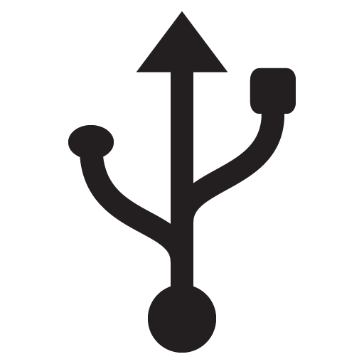

RadiumOS，
一个
开源的基于Scratch的ScratchOS

最佳兼容性
使用纯原版制作，可以使用任何一个Scratch编辑器打开并编辑。推荐使用TurboWarp，因为可以120帧运行，更加流畅丝滑www
丰富个性化
你可以自定义很多东西，例如程序坞，主题色，明暗模式等等。在一众ScratchOS中，RadiumOS拥有极为丰富的个性化。
开源免费的
RadiumOS作为ROSP完全开源在 GitHub - ROSP 上，根据GPL2开源协议，你可以任意使用、改编、分发甚至是出售它们，只需要标注我的名字，并且承担一切后果。
跳转到TurboWarp
不过可惜的是，RadiumOS由于代码的问题，将停止开发与支持……
然而不必伤心，因为RadiumOS R-E正在开发中，并且基于新的更简洁可维护的新架构！
RadiumOS R-E将迎来最大的更新！
最不可或缺的功能：资源管理器
左图是一张概念图，很显然可以看出来，Finder 是一个直角窗口。事实上，RadiumOS R-E 的所有窗口都将是直角窗口，和 RadiumOS 不一样。主要原因仍旧是制作的难易。
RadiumOS 原本打算制作文件资源管理器，最后废弃……不过这个想法将在 RadiumOS R-E 中实现。我将会将其制作为图形化界面，就像Windows那样，并且作为单独的部件放到ROSP里开源。
左图同样可以看出 RadiumOS R-E 保留了 RadiumOS 的最大特征：三色按钮在窗口的右上角。不过不同的是，我这次的按钮将会变成圆形而不再是一个方形了，这对Windows用户很不友好，但是有时我们也要做出伟大的尝试。
你也可以创建一个窗口程序！
右图是一张概念图。在 RadiumOS 的图形化界面用文字编程会是什么感受？Radium IDLE 将展示给你！虽然RadiumOS并不是第一个可编程的Scratch OS，但是最划算的ScratchOS。
在此之前，Main OS 内核就已经占有一席之地了，然而其不完全开源。不过我会将 Radium IDLE 创建窗口的代码单独提出作为 ZIUI_Main 使用，并且根据我的 GPL2 协议，你完全可以免费使用并改编，代价只是在系统内核标上“ZIUI NT”即可！
更好的图层管理
左图是一张概念图。更好，更快地管理多层窗口，简单便捷地确定当前的焦点并做出相应操作。如果要创建 RadiumOS Software 也不用修改该程序，可以更便捷地开发软件！